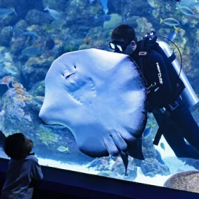
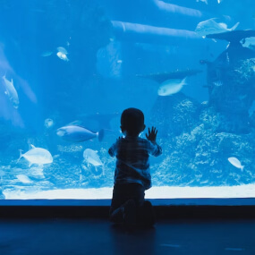
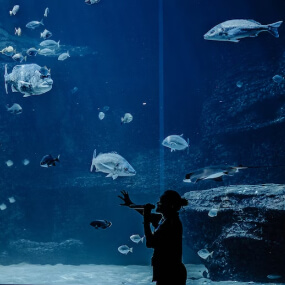
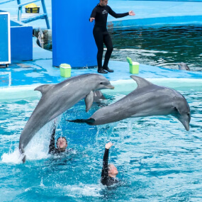
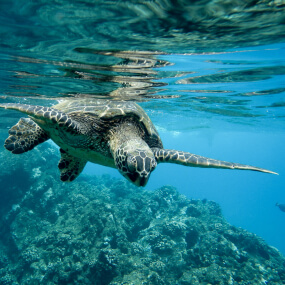

活動行程
Activities
台北海生館活動
-

夜宿海生館-兩天一夜
夜宿海生館是一個兩天一夜的活動，將帶您前往探索台灣水域區的豐富生態和文化。進行夜間探索、聆聽海洋生物的聲音，更有機會觀察到燈籠魚、海蜇等特殊生物，兩天一夜的行程充滿探索和學習的樂趣，讓您深入了解台灣水域區的獨特之處。
-

水中留影
水中拍照是一種非常有趣的活動，可以在游泳池或海灘等水域進行。通過使用專業的防水相機或手機殼，您可以在水中自由拍攝照片和影片，捕捉美麗的海底風景、游泳的動作以及快樂的時刻技巧，如水滴拍攝、水面倒影等，以獲得令人驚嘆的效果。
-

海生館專人導覽(預約制)
夜宿海生館是一個兩天一夜的活動，將帶您前往探索台灣水域區的豐富生態和文化。進行夜間探索、聆聽海洋生物的聲音，更有機會觀察到燈籠魚、海蜇等特殊生物，兩天一夜的行程充滿探索和學習的樂趣，讓您深入了解台灣水域區的獨特之處。
-

海洋跳躍者：海豚秀
來到海生館，別錯過與海豚互動的機會！海豚秀是海生館最受歡迎的活動之一，每天都有多場表演，讓你可以近距離觀察這些聰明、可愛的海洋哺乳動物。在表演中，你可以看到海豚們跳躍、翻轉、灑水等技巧動作，展現 出它們非凡的運動天賦。
-

磷蝦小管家：餵魚體驗活動
將穿上特殊的衣物，跟隨專業的飼養員進入水族館中的觀賞魚缸，親手投放食物給魚群。當磷蝦在餌料中出現時，你會感到一陣刺鼻的氣味，但 這不影響你享受這個與魚群互動的體驗。深入瞭解飼養員們餵養觀賞魚的技巧和磷蝦的生態知識，同時體驗到成為一名飼養員的感覺。